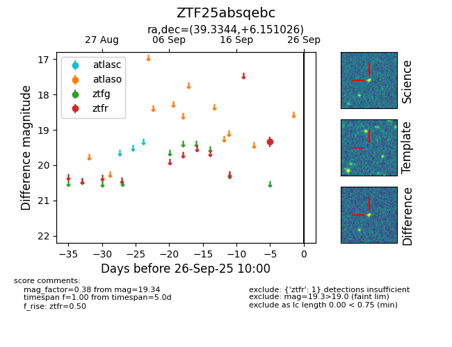

FINK: ZTF25absqebc
Lasair: ZTF25absqebc
ALeRCE: ZTF25absqebc
ZTF25absqebc (ztf,fink)
equatorial (ra, dec) = (39.3344,+6.15103)
galactic (l, b) = (164.4214,-48.00558)

last ztfr=19.34
1 ztfr detections